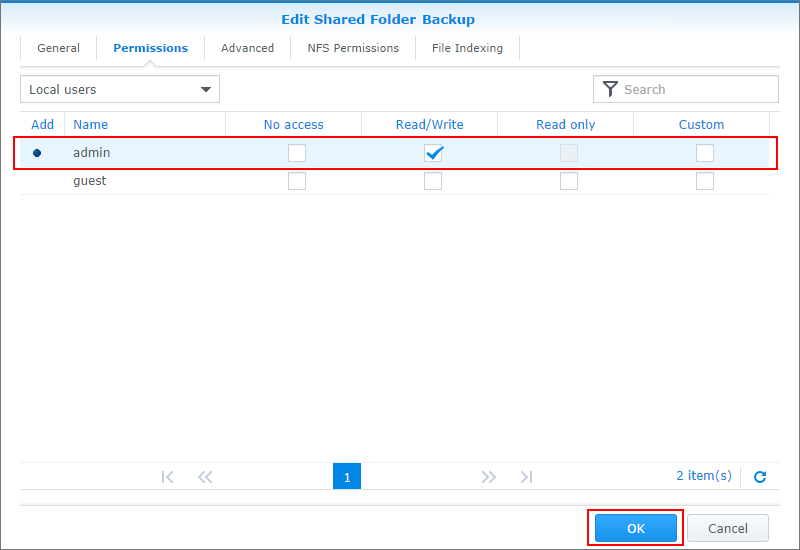

Genel Bakış
Cloud Station sadece sofistike bir platformlar arası senkronizasyon yazılımı değil, kullanıcılar onu kişisel bilgisayarlarını yedeklemenin daha akıllı bir yöntemi olarak da kullanabilirler. Cloud Station'ı yedekleme ortağınız olarak kullanmanın bazı faydaları burada. Öncelikle, gerçek zamanlı çoğaltım daha iyi bir RPO sağlar, büyük bir olay sonucu bilgisayarınızdaki verilerin kaybedilebileceği (kurtarılamayacağı) süre daha kısa olur. Anlık olmasının yanı sıra, herhangi bir anda büyük miktarda bant genişliği kullanan geleneksel yedeklemelere göre bant genişliğinden önemli ölçüde tasarruf etmenize yardımcı olur. PC istemcinizde dosya boyutunu veya dosya tipini ayarlayarak aynı klasör içinde yedeklenmelerini istemediğiniz dosyaları kolaylıkla filtreleyebilirsiniz. Cloud Station ayrıca tek bir dosyanın 32 geçmiş sürümüne kadar koruyabilir ve sunucu (NAS) tarafından PC istemcinize geri yüklemenizi sağlayabilir.
1. Cloud Station'ın eCore Server üzerinde kurulması
- DSM'de administrator'a ait bir hesapla oturum açın.
- Cloud Station'ı başlatın.
- Kullanıcı ana sayfa özelliğini etkinleştirmediyseniz, etkinleştirmeniz istenecektir. Tamam'a tıklayın.
- Kullanıcı ayarları sayfasına yönlendirileceksiniz. Kullanıcı ana sayfalarını etkinleştirerek Uygula'ya tıklayın.
- Ardından Cloud Station'a geri dönün, etkinleştirmeniz istenecek. Evet'e tıklayın.
- Ayrıcalıklar bölümüne giderek hangi kullanıcıların Cloud Station'ı kullanabileceklerini belirleyin. Kaydet'e tıklayın.
- Yedekleme amacıyla eCore Server'ınızda bir paylaşımlı klasör ayarlayın. Bunu yapabilmek için, Denetim Masası > Paylaşımlı Klasör öğesine gidin ve Oluştur'a tıklayın.
- Klasörünüzü adlandırarak ayrıntıları uygun biçimde doldurun. Tamam'a tıklayın. Örneğin, dosyayı Backup olarak adlandıralım.
- İzinler sekmesinde hangi kullanıcıların klasöre erişebileceklerini belirleyin. Örneğin, admin kullanıcılarına klasörde okuma/yazma izinleri verelim. Tamam'a tıklayın. 
- Cloud Station > Ayarlar > Paylaşım öğesine gidin ve Yedekleme klasörünü seçin ve Etkinleştir'e tıklayın.


2. Cloud Station'ın Windows PC'niz üzerinde kurulması
Cloud Station'ı Mac veya PC'nizde kurma adımlarını takip edin
2,1 PC için
- Cloud Station > Genel Bakış öğesine gidin ve İndir düğmesine tıklayın.
- Windows PC için Cloud Station'ı indirmek için düğmeye tıklayın. (Cloud Station'ı Synology İndirme Merkezi'nden de indirebilirsiniz.)
- Yükleyiciyi bilgisayarınızda başlatarak Cloud Station yükleme talimatlarını takip edin.
- Yüklemeden sonra Cloud Station'ı bilgisayarınızda çalıştırın. Şimdi Başlat'a tıklayın.
- Cloud Station çalıştıran eCore Server'ın adresini (veya QuickConnect ID'sini), kullanıcı adını ve parolayı girin. (Ayrıca sağ taraftaki arama simgesine de tıklayabilirsiniz; Cloud Station otomatik olarak LAN dahilindeki diğer eCore Server sunucuları arayacaktır). İleri'ye tıklayın.
- Görevinizi nasıl kurmak istediğinizi seçin (burada Gelişmiş Kurulum'u seçeceğiz, zira yedekleme için özel bir klasör kuruyoruz). İleri'ye tıklayın.
- Daha önce eCore Server'ınızda oluşturduğunuz Backup klasörü ile senkronize tutmak için bilgisayarınızda bir klasör seçin. İleri'ye tıklayın.
- Bitti'ye tıklayarak kurulumu tamamlayın.


Başka bir görev oluşturmak için:
- Cloud Station > Ayarlar öğesine giderek bu yeni görev için paylaşımlı bir klasörü etkinleştirin. Örneğin photo. photo için okuma/yazma ayrıcalıklarınızın olduğundan emin olun.
- PC'nizde Cloud Station'da Oluştur üzerine tıklayın.
- Yeni göreviniz için bir eCore Server seçin. Burada Bağlı eCore Server seçimi yapacağız zira aynı eCore Server için başka bir görev oluşturuyoruz. İleri'ye tıklayın.
- Gelişmiş kurulum öğesini seçin ve kuruluma devam etmek için sihirbazın kalanını izleyin.


2.2 Mac için
- Cloud Station > Genel Bakış öğesine gidin ve İndir düğmesine tıklayın.
- Mac için Cloud Station'ı indirmek için düğmeye tıklayın. (Cloud Station'ı Synology İndirme Merkezi'nden de indirebilirsiniz.)
- Yükleyiciyi bilgisayarınızda başlatarak Cloud Station yükleme talimatlarını takip edin.
- Yüklemeden sonra Cloud Station'ı bilgisayarınızda çalıştırın. Şimdi Başlat'a tıklayın.
- Cloud Station çalıştıran eCore Server'ın adresini (veya QuickConnect ID'sini), kullanıcı adını ve parolayı girin. (Ayrıca sağ taraftaki arama simgesine de tıklayabilirsiniz; Cloud Station otomatik olarak LAN dahilindeki diğer eCore Server sunucuları arayacaktır). İleri'ye tıklayın.
- Görevinizi nasıl kurmak istediğinizi seçin (burada Gelişmiş Kurulum'u seçeceğiz, zira yedekleme için özel bir klasör kuruyoruz). İleri'ye tıklayın.
- Daha önce eCore Server'ınızda oluşturduğunuz Backup klasörü ile senkronize tutmak için bilgisayarınızda bir klasör seçin. İleri'ye tıklayın.
- Bitti'ye tıklayarak kurulumu tamamlayın.


Yeni bir görev oluşturmak için:
- Cloud Station > Ayarlar öğesine giderek bu yeni görev için paylaşımlı bir klasörü etkinleştirin. Örneğin photo. photo için okuma/yazma ayrıcalıklarınızın olduğundan emin olun.
- Bilgisayarınızdaki Cloud Station'da Oluştur üzerine tıklayın.
- Yeni göreviniz için bir eCore Server seçin. Burada Bağlı eCore Server seçimi yapacağız zira aynı eCore Server için başka bir görev oluşturuyoruz. İleri'ye tıklayın.
- Gelişmiş kurulum öğesini seçin ve kuruluma devam etmek için sihirbazın kalanını izleyin.


3. Cloud Station'dan veri alınması
Bir dosyayı yanlışlıkla kaldırır veya üzerine yazarsanız, Cloud Station onu kolaylıkla geri alabilmenizi sağlar.
4.1 Senkronizasyonlu bir dosyanın önceki bir sürümünü PC'ye indirme
- Sistem tepsinizdeki Cloud Station simgesine tıklayın ve klasör simgesine tıklayın.
- Seçtiğiniz dosyaya sağ tıklayın ve ardından Synology Cloud Station > Önceki sürümlere gözat seçimini yapın.
- İndirmek istediğiniz sürümü bulup indirme simgesine tıklayın.
- Dosya adını girin ve dosyayı kaydetmek için hedefi seçin.


4.1 Senkronizasyonlu bir dosyanın önceki bir sürümünü Mac'e indirme
- Sistem tepsinizdeki Cloud Station simgesine tıklayın ve klasör simgesine tıklayın.
- Seçtiğiniz dosyaya sağ tıklayın ve ardından Synology Cloud Station > Önceki sürümlere gözat seçimini yapın.
- İndirmek istediğiniz sürümü bulup indirme simgesine tıklayın.
- Dosya adını girin ve dosyayı kaydetmek için hedefi seçin.


4.3 Senkronizasyonlu bir dosyanın önceki bir sürümünü Cloud Station'dan indirme veya geri yükleme
- Cloud Station > Sürüm Geçmişi> öğesine giderek daha önce oluşturduğunuz Backup klasörünü seçin.
- Geri almak istediğiniz dosyayı seçerek Eylem > Önceki sürümlere gözat öğesine tıklayın.
- İndirmek istediğiniz dosyanın sürümünü seçerek İndir'e tıklayın. Ya da seçili sürümün geri yüklenmesini istediğinizden eminseniz Geri Yükle'ye tıklayın, geçerli sürümünüzün üzerine yazılır.


4. Önemli notlar
- Bir dosyanın kazayla silinmesi veya üzerine yazılması durumuna karşın eski sürümleri her zaman saklayın.
- Genel Ayarlar bölümünde, bir dosyayı bilgisayarınızdan sildiğinizde o dosyanın NAS'ınızdan tekrar getirilmesini ya da NAS'ınızdan silinmesini ayarlayabilirsiniz.
5. Verilerinizin daha fazla korunması
Verilerinizi korumaya ve yedeklemeye dair daha fazla yöntem için DSM'de sunulan diğer yedekleme hizmetleri hakkında ayrıntılı eğitimleri görmek amacıyla buraya tıklayın.